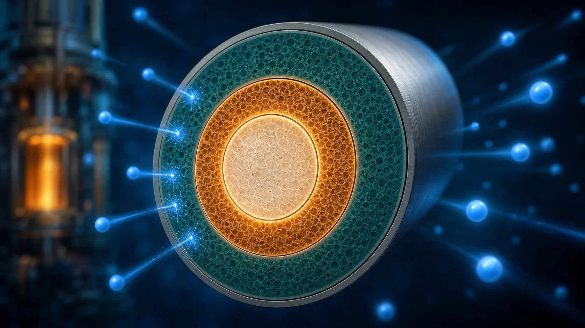
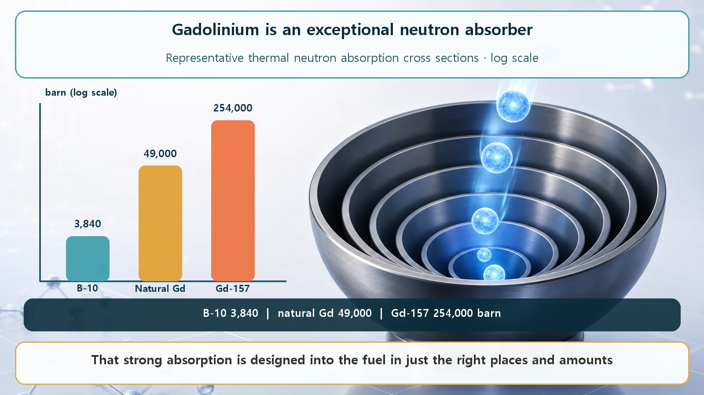
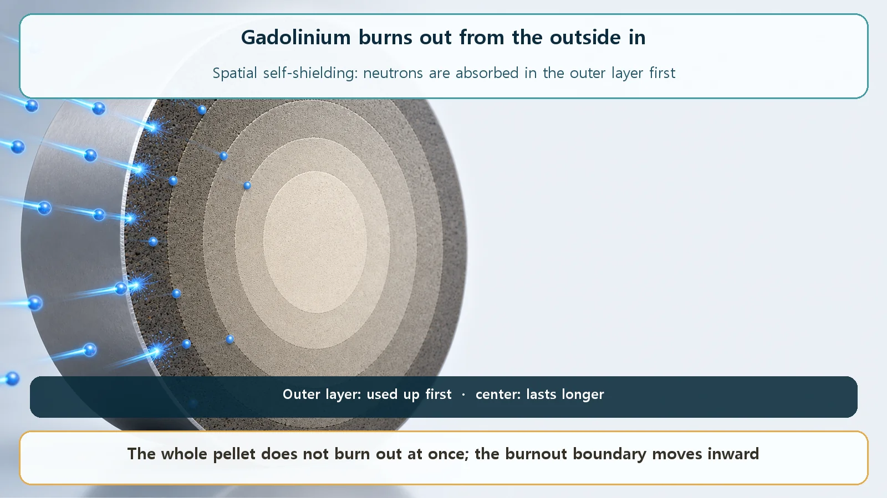

Long-Term Core Behavior & Fuel Cycle · 159
A Brake That Peels Away Like an Onion — Gadolinium in Nuclear Fuel
Gadolinium-157 absorbs neutrons more than sixty times as readily as boron-10. Mixed into some fuel pellets, it holds down fresh fuel's excess reactivity and releases its grip layer by layer.

Gadolinium is the stable element that absorbs thermal neutrons best: gadolinium-157 has a cross section of about 254,000 barns, more than sixty times that of boron-10. Mixed as gadolinium oxide into some fuel pellets, it holds down the excess reactivity of fresh fuel, and because its outer layers shield the inner ones, it burns out from the outside in, like peeling an onion, releasing its brake gradually.
A reactor core freshly loaded with new fuel is a bit like a wind-up toy wound as tight as it will go. It has to run for years, so it needs plenty of energy at the start, but right now that "plenty" is more than it needs. This surplus, called excess reactivity (reaction capacity held in reserve rather than used now), has to be kept quietly held down and then released only as fast as the fuel loses strength.
Among the materials that do the holding down, one element is a particular favorite of nuclear engineers, and its name is unfamiliar: gadolinium. Let's look at what makes gadolinium so special that reactors single it out, and why the way it works resembles peeling an onion.
A glutton for neutrons, second to none
Gadolinium (symbol Gd, atomic number 64) is a rare-earth metal. The name may be new to you, but it's already in your life as an ingredient in the contrast agents used for hospital MRI scans. Reactors care about it for one reason: it is extraordinarily good at swallowing neutrons.
How well a material catches neutrons is measured by its absorption cross section: how big the target looks to an incoming neutron, or how easy a target it is to hit, expressed as an area in a unit called the barn. The larger the value, the better the material snatches neutrons.
Natural gadolinium is a mix of seven siblings (isotopes), and just two of them do almost all the absorbing:
- Gadolinium-157: a thermal neutron absorption cross section of about 254,000 barns. That is by far the highest of any stable nuclide.
- Gadolinium-155: about 61,000 barns, still far beyond most materials.
For comparison, boron-10, a neutron absorber commonly used in reactors, comes in at about 3,840 barns, so gadolinium-157 swallows neutrons more than sixty times as readily.
One clarification. Across all nuclides, the largest absorption cross section actually belongs to xenon-135 (about 2.6 million barns). But that is a radioactive substance that appears briefly during fission and then disappears. Line up only the stable elements, and the championship belongs to gadolinium-157.

"Isn't too strong a bad thing?" Enter the onion
A natural question: if gadolinium gobbles neutrons that greedily, won't it kill the reaction the moment it goes in, then suddenly let go once it's all burned up? Wouldn't that make the reactor harder to handle?
Surprisingly, being "too strong" is exactly the secret that makes gadolinium such a fine supporting actor. The secret's name is self-shielding.
Picture a fuel pellet containing gadolinium. Its absorbing power is so strong that the gadolinium in the outer shell grabs the incoming neutrons first. Neutrons then barely reach the gadolinium deep inside the pellet. It's like a buffet line where the people in front eat everything, so the people at the back never get a turn. The inner gadolinium survives untouched for a while, shielded by its own kind in front of it (hence "self-shielding").
So how does it get used up? Like peeling an onion from the outside in: only once the outer gadolinium is consumed does the next layer in start receiving neutrons. Layer by layer, the burnout works its way inward and the gadolinium slowly disappears.

Thanks to this, gadolinium's braking effect doesn't vanish all at once; it weakens gradually and as planned over the fuel cycle. The excess reactivity of the new fuel shrinks naturally as the fuel burns, and designers set the gadolinium's amount and location so it is consumed at just that pace, letting the power to be held down and the holding-down power fall roughly together through the cycle. A property that could have been "too strong to be useful" becomes, through self-shielding, "a brake that releases smoothly on schedule."
So how is it actually put in?
Gadolinium doesn't go in as a lump of metal. It is made into a powder, gadolinium oxide (gadolinia, Gd₂O₃), mixed with the uranium dioxide powder that is the fuel material, and baked (sintered) into solid pellets. So instead of inserting a separate absorber rod, the gadolinium is mixed into the fuel pellets themselves from the start. This is called a burnable poison "integrated" into the fuel.
Interestingly, it goes into only some of the fuel rods in a fuel assembly, not all of them. By carefully choosing which rods get it and how much, designers can hold down reactivity and at the same time smooth out spots where power tends to concentrate in the core.
Isn't this just like boric acid?
Holding down reactivity may bring to mind another regular control tool: boric acid. Both absorb neutrons and lower reactivity, but they are quite different in character.
Boric acid is dissolved in the coolant water, and people adjust its concentration little by little to control the reactivity of the whole core. It's a "liquid knob" operators adjust in real time. Gadolinium, by contrast, is locked into the fuel as a solid and burns itself away in a set order without anyone touching it. Once designed in, it's a "built-in timer" that disappears on schedule. So the two aren't rivals; they are used together, each covering the other's gaps.
It's also worth knowing that gadolinium isn't the only burnable poison, the general name for neutron absorbers that disappear on their own as they burn. Thin boron-based coatings and other elements such as erbium play the same role. What sets gadolinium apart is its overwhelming absorbing power: a large initial holding effect from a small amount, and an especially clear onion-style self-shielding burnout.
The whole idea in one simple relation
No complex equations, just one proportionality:
Reactivity held down by gadolinium ∝ amount of gadolinium (mainly Gd-157 and Gd-155) still remaining
As the onion layers are used up, the holding force weakens, while the fuel's own excess reactivity also falls as it burns. The art of design is setting the gadolinium's amount and location so these two curves descend side by side through the cycle, with neither disappearing too early nor lingering too long.
Where this small additive reaches
This small additive reaches throughout design and operation. It safely holds the excess reactivity right after new fuel is loaded, so control rods don't have to be pushed hard, eases the load on boron concentration, and through rod placement helps fuel burn evenly.
Above all, sharing a large excess reactivity among several means, control rods, boric acid and burnable poisons, rather than relying on any single one, is a careful design practice. Gadolinium holds a distinctive place among them: an absorber planted in the fuel in advance that steps back on schedule without anyone touching it.
Today's takeaways
- Gadolinium (Gd) is the stable element that absorbs thermal neutrons best, with two isotopes doing the work: Gd-157 (about 254,000 barns) and Gd-155 (about 61,000 barns).
- Its absorption is so strong that outer layers shield inner ones (self-shielding), so burnout proceeds from the outside in, like peeling an onion, holding down the large early excess reactivity gently and over time.
- Gadolinium oxide (Gd₂O₃) powder is mixed with uranium dioxide in only some fuel rods, and rod placement also smooths power concentration.
- Unlike boric acid, dissolved in the coolant with its concentration adjusted by people, gadolinium is built into the fuel and burns itself away; the two are used together as complements.
- Gadolinium is one of several burnable poison candidates, but its overwhelming absorption and clear onion-style burnout make it a favorite.
An element mixed in so sparingly you'd never see it releases the abundant energy of new fuel gently and on schedule, a glimpse of how finely reactor design is worked out.